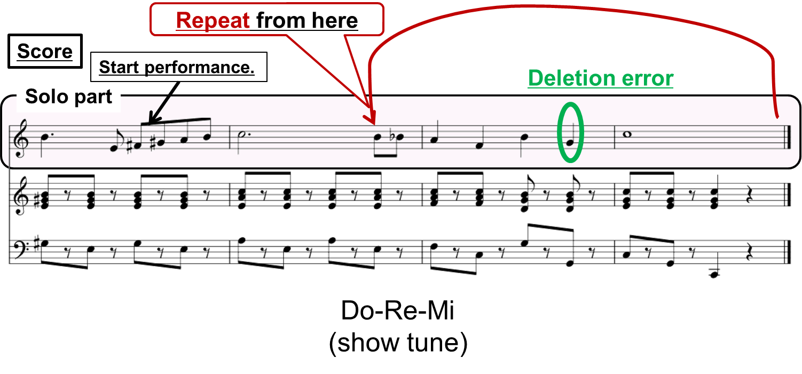

home
Acoustic Automatic Accompaniment System for Musical Performance with Errors and Arbitrary Repeats and Skips.
This system can synchronize musical accompaniment automatically to
a human performance with insertion/deletion/substitution errors
and arbitrary repeats and skips in real time.
Demo Videos
Videos with scores in [Download PPTX file].
Accompanying to Human Performance during Practice
-
Accompanying to Human Performance with a Deletion Error

-
Accompanying to Human Performance with a Repeat and a Deletion error
 -
Accompanying to Human Performance in Practice
- Point: a Repeat and tempo changes.
- Point: Some Repeats
-
Point: Many Errors and Repeats in short time (time 00:39~end).
- Point: a Repeat and tempo changes.
- Whole score: Do-Re-Mi
Pink regions in the below score are the human performance part.

Reference
- Tomohiko Nakamura, Eita Nakamura and Shigeki Sagayama, "Acoustic Score Following to Musical Performance with Errors and Arbitrary Repeats and Skips for Automatic Accompaniment," in Proc. of Sound and Music Computing Conference 2013, 166, Aug. 2013. [PDF file]